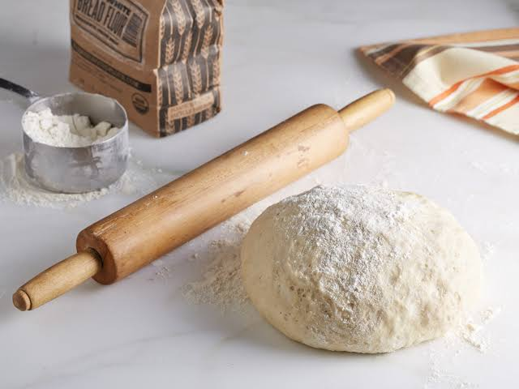

Our Story

Founded in Angeles City in 2005, Danda’s Pizza began with a simple dream: to bring people together through the love of good food. What started as a passion for authentic, freshly made pizza grew into a place where friends, families, and neighbors could gather, share stories, and create lasting memories. For us, pizza has always been more than just a meal—it is a way to bring people closer together.